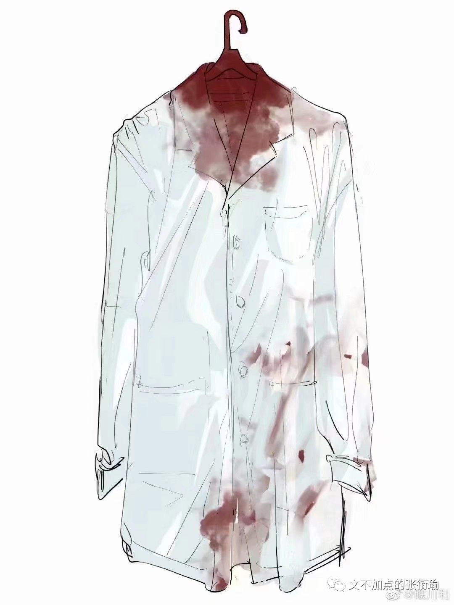
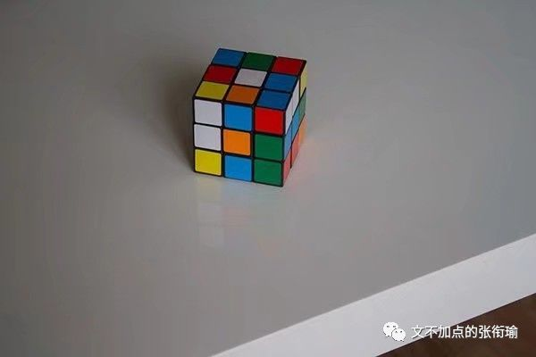
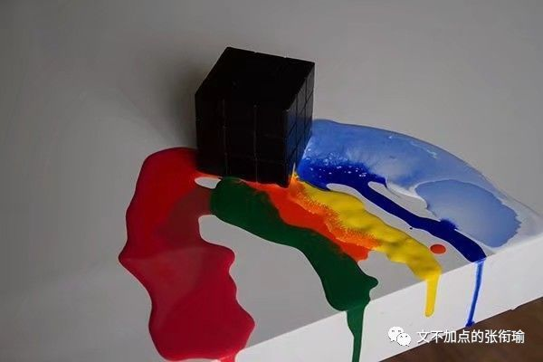

昨晚开始看到医学生们在空间和朋友圈转这件事情的时候，已经有写过一些内容发了出来。大概因为一些朋友私说不是很能认读繁体字，于是转而写成推文。本质观点在于：愤怒和悲哀都合情合理。但若要把这当成对公众事件和专业焦虑的双重出口，我就是有眼睁睁地看着同龄人一点点地被情绪裹挟、销蚀。
事实上，没有任何一个和人打交道的职业可以逃脱人类的戾气。医生、警察、教师、公交车司机等等。暴力而非法地夺取另一个人的生命，但凡任何一个有良知的人都会对逝者予以哀悼、对杀人者予以谴责。这不因我是不是医学生、是不是师范生、是不是基督徒而改变。所有社会公众事件的爆发都会有其根源。我也会为把这么多年学下来的医生而扼腕叹息。我也会觉得推进医疗综治以及刑事案件预防很有必要。可是这是戾气，要把95岁只能鼻饲的老人一直架着要医治到能走路，要连续半个月和医生大吵大闹。人犯了法，法律判他该死他就应该死。但是死了就再也没有人知道他为什么会这么做，也不知道未来还会有哪些人会同样地对其他人痛下杀手。即便以后是清洁工、是从救助站里面出来的乞丐、是一切边缘了没有话语权的人，我的观点也不会变。区分医学生和非医学生只会让事情变成一部分人自爆式的舆论袭击和情绪表演，警惕这不是好现象。类似的观点可以看看剧作《我们与恶的距离》。愤怒是一种可以理解和运用的情绪，但不要被左右。戾气还很多。另外顺便给各位医学生继续提一下职业自豪吧。自己做的事情是一件能被考验，救助人的合情合理的职业。别人做的不合时宜的举动，自己职业的意义也不会因此而转移。and我列表里还这么多医科生而我以后也会越来越多和医科生有交流地写在这
这次事件可以说只是以医院为载体。医生在第一线。下次换成外卖小哥、刑侦民警、中学教师、居委社工，戾气还是这个人。问题出在加害人的戾气，而现在蔓延到了大多数医学生。我可以把所有的气话当成是发泄。但这本质是在拿别人的错误惩罚自己。当我一直以来认为耿直、友善、考虑周全的医学生们开始冷笑自己的职业、转鲁迅的话然后大有越过法律开始判处死刑执行私刑的时候。我以前也反思过部门里出现的异类、班级里出现的不合群又很有表达欲的人。老鼠屎坏汤，搞得其他人都跟着烦心的事情数不胜数。
可我觉得这并不是偶然的小概率事件，哪怕抛开我们的身份客观来看，发生在医院的恶劣的事格外多。医学精英们大多选择沉默，只有这些没有发言权的我们还在奔走呼号，卫健委只是例行公事一样地报道谴责，这么多年过去了，这样的事却只多不少。
是。和人打交道越多，受到戾气可能就越大。我一样地见过在HK混乱时期 ，对于香港警队的警察出现麻烦时刻，警校生出来发表和今天医科生类似的言论，当时是警察被咬断手指(后来证实为谣言，但这次伤医是事实)只多不少，直接原因是就在第一线，但根本原因在加害人的社会问题。保护教师权益，保护警察尊严，保护公交车司机，没有哪一件能落下。这次发生在医生身上，成为了医生们发泄因为专业学习压力和对事件憎恶的双重出口。但是在加害人，ta的社会成长环境、为什么可以一边过度医疗？偏执地赡养老人，一边又对医生痛下杀手，这不是一个具有至少两种矛盾品质的社会问题吗？问题出在加害人的戾气，也许表达地不那么准确，但怕就怕在受害人/受害执业群体的情绪不分轻重地被裹挟。
不管是说完了之后，转而摇摇头更灰心一点，又变成了自己开始想成为的人；还是在担心自己学了这么多年，出来结果被人哐哐两锤子；还是担心被判处了死刑的人被莫名其妙逃脱了去，然后继续危害社会。反过来想一想就会发现在这件事情上，很容易就真情实感地为关于自己职业的悲伤论调做了“伪证”。
最近的院线电影《误杀2》有这样一段情节，援引了韩国著名电影《蒙太奇》。我以此来说明人们是怎样在不知不觉的情况下，自己说了真话但是无意中被做了“伪证”。韩国电影《蒙太奇》的主要内容，是绑架案受害者妈妈为了把15年前的真凶绳之以法，亲自模仿当年凶手的作案手法，并把当年凶手的电话录音剪接到这次模拟作案中，制造了一次和15年前一样的蒙太奇。《蒙太奇》这部电影之所以强调15年，是因为韩国案件的追诉期是15年。一个案子过了追诉期，就算再有重大进展，公检法机构也无能为力。所以，因绑架案失去孩子的妈妈决定自己调查真凶，并查出了真凶的身份。因为追诉期过了，公权无法再为她伸张正义，所以妈妈决定自己使用模仿作案，亲自惩罚真凶。
戏骨陈冲在最近的院线电影以此对戕了完美的不在场证明，说明男主为什么不断与人谈话加深印象然后以此调换时间，从而证明自己的行动轨迹，瞒天过海地让其他人说实话但是在不经意间为自己做了伪证。在不继续剧透的情况下，这一次伤医事件当中我嗅到了类似的味道。
新闻是需要抓眼球的。受众面最广的，自然是讲述所有惊讶错愕，调动看客的情绪感官（暴食、色欲、贪婪、忧郁、暴怒、懒惰、虚荣、傲慢）。所有人越可以向下兼容这一社会议题中心，其舆论的热度也就越大。
当医学生们开始说出“非医学生都来看看吧”，当警校生开始说出“这还要我们怎么克制啊”，当新闻执业者开始说出“调查新闻已死”、“房间里有大象”。人们有权利去拥抱自己生命中的每一种情绪，他们构成了自己生活中的每个部分。
情侣吵架也会说气话，为他人考虑的人才会知道不翻旧账。我这次很忧虑地看不出来，我身边的医学生们到底是在说气话，还是一些人真的这么想。眼睁睁地看着保有良好品质而又涉世未深的医学生们往情绪的漩涡里边跳，我做不到。
恶性社会事件里，不必把“荡妇羞辱”作用在自己的身上。一个劲地在说强奸犯之所以管不住自己，是因为有人诱惑。这样的病的不止是强奸犯，还有看客。恶性伤人事件不适宜成为自己的专业焦虑情绪，和对公众事件愤怒的双重出口。不分清白的情绪宣泄，除了在一部分人的亲密恋爱关系中会被认为是淘气可爱，除此之外在任何理性的场合都无异于撒泼。管住情绪，在做好自己本职的同时，将视角转向问题的根源。
人是会变的。认知也在变。昨天我在襄阳的游记中间写，平静是最持久最强大的力量。其原因在于知道自己的情绪处在哪一个阶段，怎么也做到自己要做的事而不是忽视或矫饰情绪。
我不知道同学说大群里在想执业医生们不闻不问有什么考虑，也许仅仅把这当成一份工作根本没什么想的、也许玛莉亚地觉得会影响他人的心情、也许自己已经自闭到又得修整好多天。知不知道、关不关心、习不习惯、会不会做出改变，是不一样的几件事。
以前做纸媒我如是说，大概率即将从事生物医学我亦如是说。